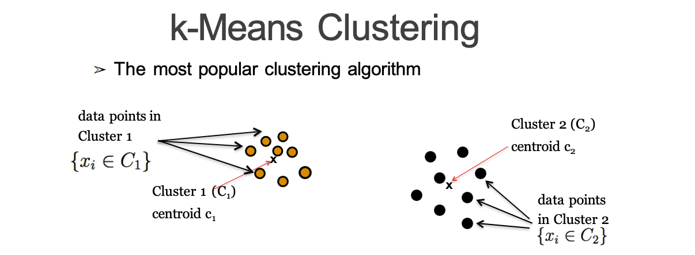

Code
par(mfrow = c(2, 2))
hist(USArrests$Murder)
hist(USArrests$Assault)
hist(USArrests$Rape)
hist(USArrests$UrbanPop)Code
arrest_scal <- scale(USArrests)Clustering is an unsupervised approach to modeling where the goal is to partition the data into groups.
There is no one-size-fits-all solutions, but there are good and bad cluster solutions. No method works best all the time. Keep in mind that clustering uses ALL the variables you provide it and clusters should add some business value.
Hard clustering is characterized by objects only belonging to one cluster. Fuzzy clustering is characterized by objects having the capability to belong to more than one cluster (usually with some probability).
Hard:
Fuzzy:
Hierarchical clusters form a tree so you can visually see which clusters are most similar to each other. Flat clusters are created according to some apriori process, usually iteratively updating cluster assignments.
Hierarchical is expensive when you have a large dataset.
K-Means revolves around using centroids. Centroids are “centers of clusters” or the means of a group of observations.

With K-Means we are trying to minimize the sum of squared distances from each point to its cluster centroid.
\[ \sum_{C_k}\sum_{x_i \in C_k} \lVert x_i - c_k \rVert^2 \]
How can we determine the number of clusters we should use?
We can use an “elbow” plot to find a place where the marginal benefit to objective function for adding a cluster becomes small.

Advantages:
Disadvantages
You will need to do data epxloration before trying to cluster the data.
You can try clustering on original data or you can try it on PCA of the variables, particularly if the data is big.
par(mfrow = c(2, 2))
hist(USArrests$Murder)
hist(USArrests$Assault)
hist(USArrests$Rape)
hist(USArrests$UrbanPop)arrest_scal <- scale(USArrests)clus2 <- kmeans(arrest_scal, centers = 2, nstart = 25)
clus2K-means clustering with 2 clusters of sizes 20, 30
Cluster means:
Murder Assault UrbanPop Rape
1 1.004934 1.0138274 0.1975853 0.8469650
2 -0.669956 -0.6758849 -0.1317235 -0.5646433
Clustering vector:
Alabama Alaska Arizona Arkansas California
1 1 1 2 1
Colorado Connecticut Delaware Florida Georgia
1 2 2 1 1
Hawaii Idaho Illinois Indiana Iowa
2 2 1 2 2
Kansas Kentucky Louisiana Maine Maryland
2 2 1 2 1
Massachusetts Michigan Minnesota Mississippi Missouri
2 1 2 1 1
Montana Nebraska Nevada New Hampshire New Jersey
2 2 1 2 2
New Mexico New York North Carolina North Dakota Ohio
1 1 1 2 2
Oklahoma Oregon Pennsylvania Rhode Island South Carolina
2 2 2 2 1
South Dakota Tennessee Texas Utah Vermont
2 1 1 2 2
Virginia Washington West Virginia Wisconsin Wyoming
2 2 2 2 2
Within cluster sum of squares by cluster:
[1] 46.74796 56.11445
(between_SS / total_SS = 47.5 %)
Available components:
[1] "cluster" "centers" "totss" "withinss" "tot.withinss"
[6] "betweenss" "size" "iter" "ifault" library(factoextra)Loading required package: ggplot2Welcome! Want to learn more? See two factoextra-related books at https://goo.gl/ve3WBafviz_cluster(clus2, data = arrest_scal)Silhouette is another method to define the number of clusters to use. This method estimates how well each observations falls within its cluster (distance point is to all other points in cluster and compare it to distance from that point to points in other clusters).
We want to find the number of clusters that maximizes this ratio.
library(tidyverse)
fviz_nbclust(arrest_scal, kmeans, method = "silhouette", k.max = 9)From silhouette, the optimal number of clusters selected is 2.
We can profile our original data by attaching the clusters to it:
profile_kmeans <- cbind(USArrests, clus2$cluster)
all_k <- profile_kmeans %>%
group_by(clus2$cluster) %>%
summarise(mean_assault = mean(Assault), mean_murder = mean(Murder), mean_rape = mean(Rape), mean_pop = mean(UrbanPop))
all_k# A tibble: 2 × 5
`clus2$cluster` mean_assault mean_murder mean_rape mean_pop
<int> <dbl> <dbl> <dbl> <dbl>
1 1 255. 12.2 29.2 68.4
2 2 114. 4.87 15.9 63.6Every point starts as its own cluster and then we build up clusters as hierarchies. There are several different distant measures we can use, but the two we focus on are Euclidean distance and Manhattan distance.
Euclidean distance:
\[ \sqrt{(x_1 - x_2)^2 + (y_1 - y_2)^2} \]
Manhattan distance:
\[ |x_1 - x_2| + |y_1 - y_2| \]
Once all points are part of a multi-point cluster we then need to agglomerate clusters.
How do we measure the distance between a point / cluster and a cluster?
Distance between the closest points in the clusters.
Distance between the farthest points in the clusters.
Distance between the centroids (means) of each cluster.
Average distance between all points in clusters.
Minimize SSE within the cluster compared to the centroid.
\[ \sum_{j=1}^{N_i} \lvert x_j - c_i \rvert^2 \]
Advantages:
Disadvantages:
At the end of the day, you should always evaluate clustering algorithms based on how it makes sense in the business context.
library(cluster)
dist_assault <- dist(arrest_scal, method = "euclidean")
h1_comp_eucl <- agnes(dist_assault, method = "complete")
pltree(h1_comp_eucl, cex = 0.6, hang = -1, main = "Dendrogram of agnes")We can also get the agglomerative coefficient which measures how strong the clustering structure is (want values close to 1):
print(h1_comp_eucl$ac)[1] 0.8531583Loop through possibilities of linkage methods:
method <- c(average = "average", single = "single", complete = "complete", ward = "ward")
ac <- function(x) {
agnes(dist_assault, method = x)$ac
}
lapply(method, ac)$average
[1] 0.7379371
$single
[1] 0.6276128
$complete
[1] 0.8531583
$ward
[1] 0.934621Although we can find the best mathematical cluster here, we want the best algorithm for business sense. Explore profiles to see which makes the most sense.
Density-based spatial clustering of applications with noise. Groups together points that are close to each other based on a distance measure, a minimum number of points (“neighbors”), and a “neighborhood about each point.”
Points not near other points are deemed outliers. A cluster of points must have a minimum number of points around it to be considered a cluster.
Cluster variables that are related to reduce redundancies or multicollinearity. This is also a form of dimension reduction. Variable clustering uses eigenvalues to identify similar values and assess the goodness of the partition.
In R, the package is ClustOfVar. R can handle quantitative and qualitative variables, but you need to split these into two data matrices first.